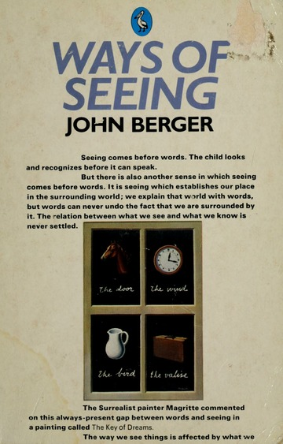

John Berger's "Ways of Seeing" critically analyzes the way we perceive visual images. The central claim of the book is that power structures influence our understanding of them. Berger argues that images have always been subject to interpretation and that they can be used to manipulate people. our perception of images is influenced by gender, race, class, and other social factors. For example, he shows how women are often shown as objects of sexual desire in advertising which feeds patriarchal power structures. He also argues that the reproduction of images has resulted in a loss of meaning and significance. Berger wants people to think about how our society shapes our understanding of the world. He believes that in order to understand the power dynamics that impacts our relationship to visual culture critically, we must first become aware of them.
